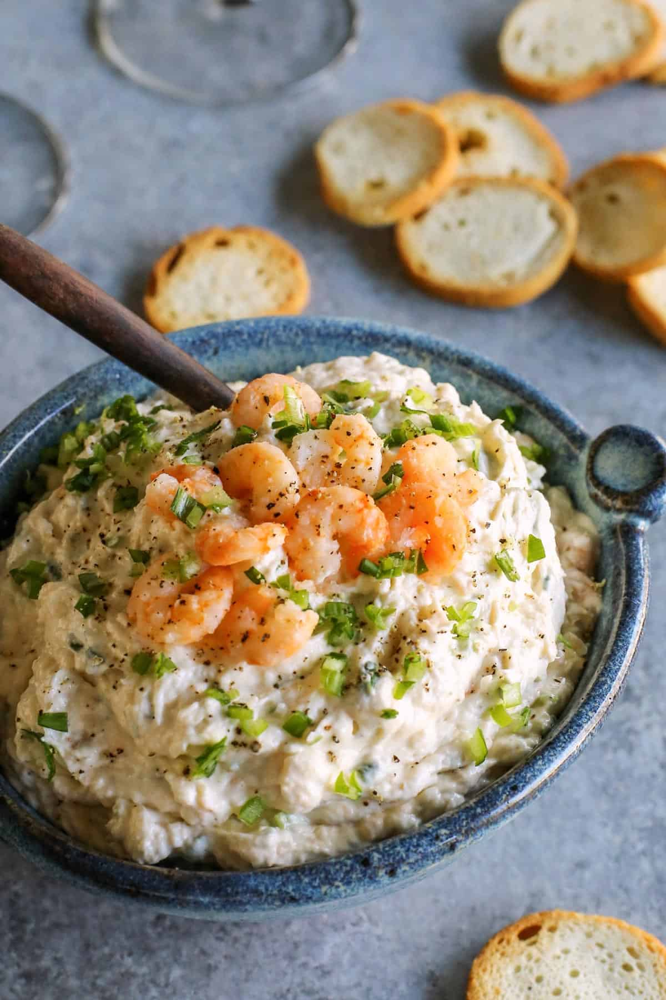

Home
Shrimp Dip

Description
Growing up, this was a staple at any family get together on my mother's side. The cream cheese based dip is just so smooth
and compliments the heat from the shrimp well. But my favorite part would have to be the green olives, adding that salty zing to really
tie things together. This recipe calls for a double boiler, but if you don't have one, don't worry. You can set a glass bowl over a saucepan
of simmering water. This allows the contents in the glass bowl to heat and blend together without being on direct heat.
Ingredients
- Shrimp, to taste
- 4 packages Cream Cheese
- 3 Eggs
- 2 tbs Vinegar
- 3 tbs Sugar
- Olives, to taste
- Onion, to taste
Directions
- Combine the cream cheese, vinegar, sugar, and eggs in a double boiler with the water simmering beneath.
- Stir the mixture frequently, allowing the ingredients to blend together while softening the cream cheese.
- Once a smooth consistency is achieved, and there are no streaks of yellow from the eggs, remove the bowl from the heat.
- Sautee the onions in a pan. Then remove them and add in the shrimp, seasoning them however you like. I prefer something
with a little heat, like cayenne and paprika with some garlic powder.
- Chop the shrimp to your liking and then add them, with the onions, to the cream cheese mixture.
- Chop and add olives to taste.